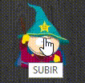

Website
This website is the reason why I decided what I wanted to do in the future. Here began a revolution within me, and is that this page was where I discovered web design. When I started I didn't have any idea of HTML or CSS, but I just started, I was invaded by curiosity, the ideas came alone, and I was just a newborn discovering a new world.
This website, which so marked my life, was actually a classroom project and as such had certain rules that I had to follow. To begin with, you could only use HTML5 and CSS3. I, not content with it, decided to investigate on my own and added a small code of javascript which I think made it much more navigable and it didn't influence the requirements as much.
It liked it very much in class and the grade was high, although at that time the grade for me was the least of all, as I had discovered my true vocation.

At the top of the page there is an image that brings together all the characters of the series, which at the same time is a map where clicking on each of them takes you to their space on the page.
On the other hand we have the menu, where we can move to any point we want independently of where we are.

This frame is a static "modal" frame found on the main page.
On it we can navigate through certain images of the series, clicking on the next or previous one, or directly jumping alternatively from one to another.

At the end we find an icon pointing up, clicking on the page will go up automatically and in turn the image changes comically.
The function of this icon is made with Javascript, which in turn, is the only javascript code of the entire page.
As you can see, the page is full of different techniques HTML and CSS so "As it is not the same to see than look, or hear than listen", here you have the link to the page so you can dive into it and get to know it better.
www.seriesrb.com